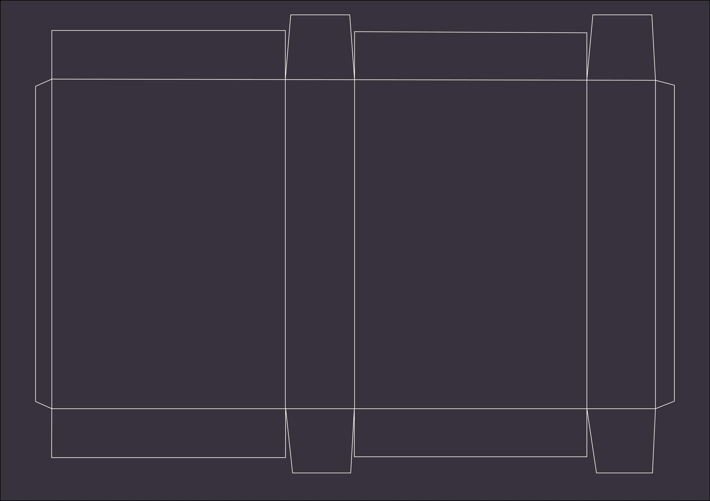
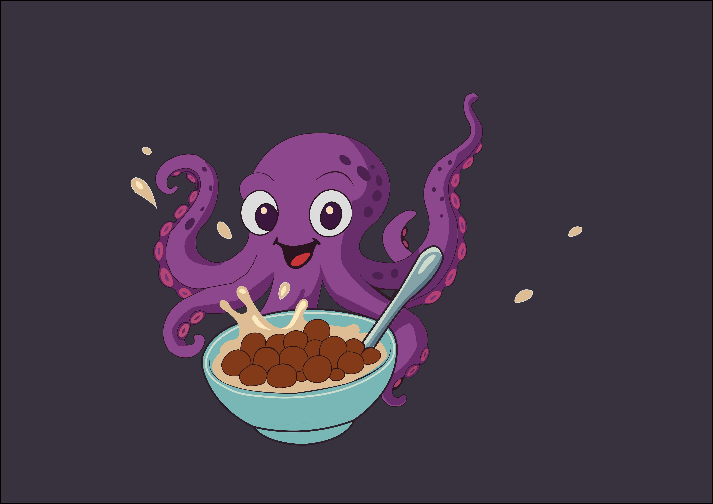

Diseño de Envases: Cereales
Desarrollo de línea de productos, coherencia visual y diferenciación por sabor.
Concepto general del proyecto
Situación: El proyecto consistió en el diseño de un set de tres envases de cereal que iban a ser vendidos en la góndola de un supermercado. El propósito era conformar una propuesta visual atractiva para un público infantil y adolescente que lograra resaltar en la competencia y enviar de forma clara el mensaje de diversión, sabor y energía, atributos clave para la categoría de cereales.
Selección del estilo visual
Esto implicaba el desarrollo de toda la identidad visual del producto Cereal Kraken, que consiste en: definir el personaje principal, la estética general, la paleta de colores según el sabor, en este caso, chocolate, frutilla y vainilla, y el estilo gráfico y coordinación entre los tres envases. También debía asegurarme de que fuera lo suficientemente llamativo, fácilmente identificable y atractivo para mi público objetivo.

Diseño de personajes e ilustraciones
Sabiendo que mi público ideal son niños y adolescentes, empecé a pensar qué tipo de cosas visuales les llaman más la atención. Por eso elegí usar un Kraken como personaje. En su forma original es un monstruo marino grande y llamativo, algo que atrae enseguida, pero también puede asustar. Para evitar eso, lo adapté y lo hice más simpático, con una sonrisa y una mirada amigable. Después de definir el personaje, armé una línea gráfica con colores brillantes, formas dinámicas y una composición con mucho movimiento, para que el diseño se sintiera divertido y con energía.
Resultado final
Se obtuvo una línea visual clara, reconocible y atractiva para el público infantil. Cada sabor mantiene una identidad propia a través del color, pero la estructura compartida permite que los tres envases funcionen como familia en góndola. Las planchas técnicas garantizan su correcta producción en impresión y troquelado.